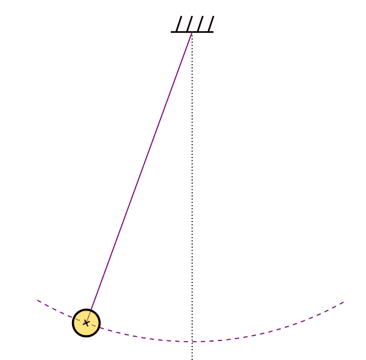

**Drill 1** Which of these is the symbol for "is defined as"? \(\approx\) \(\equiv\) \(=\) \(\sim\)
The ideas which are here expressed so laboriously are extremely simple …. The difficulty lies, not in the new ideas, but in escaping from the old ones, which [branch]1, for those brought up as most of us have been, into every corner of our minds. — John Maynard Keynes The General Theory of Employment, Interest, and Money, 1936
This chapter introduces more of the notation we will use for mathematics and for computing.
Good use of notation should make the writer’s intent clear to the reader. In our study of calculus, each component of notation will refer to a mathematical object of some kind. Consequently, the notation should, on its own, indicate the kind of object.
In the previous chapter, we described three different kinds of objects: functions, quantities, and spaces. We introduced mathematical and computer notation to make clear what is the name of a function and the names of inputs. In this chapter, we will introduce constants, parameters, and special inputs. We will see how input names, like \(x\) in \(g(x) \equiv x^3 + 3\) refer to a kind of space called a domain.
Notation (noun): a series or system of written symbols used to represent numbers, amounts, or elements in something such as music or mathematics. –Oxford Dictionaries
It makes obvious sense to use a mathematical notation with which you are already familiar. We will supplement this notation with simple rules for naming, intended to make it clear just from the name what kind of mathematical object is being named.
Chapter ?sec-computing-with-R introduces computing with the R language.
Since you will be using computing extensively, it will pay to be aware of when the the way you are used to writing mathematical statements conflicts with the requirements of computing.
Traditional mathematical notation makes extensive use of spatial arrangement, as for instance in \(\frac{3}{4}\) or \(x^{-3}\) or \(\sqrt[4]{\strut y^2 - 6}\). For those familiar with it, this notation can be both concise and beautiful. But it was developed in an era of parchment and pen, without any inkling of keyboards and the strictly linear sequence of characters so widely used in written communication. Most mainstream computer languages are based on keyboard input.
Traditional mathematical notation was developed for communicating between people and, like everyday language, has gaps and ambiguities that get sorted out (not always correctly) by human common sense. Computer languages, on the other hand, need to be precise and unambiguous so they can be interpreted by machines.
We will attempt to use mathematical notation in a way that limits the conflict between tradition and computer notation. This conflict is particularly acute when it comes to the idea of an “equation,” so widely used in high-school mathematics but not a component of mainstream computer languages.
Our style of notation will be to give functions and their inputs explicit names. The basic principle is that a function name is a sequence of letters followed by an empty pair of parentheses, for instance, \(\sin()\) or \(\ln()\). The parentheses provide a clear indication that this is a function name.
When we come to introduce computer notation in Section 3.3, you will see that function definition is done in a somewhat different manner. Why? We need to work within the syntax and grammar of the computer language. We will be using the R language, but other mainstream computer languages would impose similar requirements.
As you saw in Chapter Chapter 1, our notation for defining a function includes the names of the parameters. In our mathematical notation, both the name of the function and the names of the inputs are shown on the left-hand side of the \(\equiv\) symbol. For instance, \[g(u, z) \equiv u\,\cos(z)\] involves a function named \(g()\) and two inputs named \(u\) and \(z\) respectively. We will also use names with subscripts and superscripts, e.g. the function names \(g_3()\) or \(h_\text{water}()\).
A sensible person will define a function because they are planning to use it later on, perhaps multiple times. “Using” a function might mean including it in the formula in the definition of another function. But there is also a more specific sense of “using” to which we need to give a precise name. To apply a function means providing specific input quantities so that the output of the function can be calculated. An equivalent phrase is evaluate a function on an input(s). For instance, to apply the function \(g()\) to the input quantity 3, any of the following mathematical expressions might be used: \[g(3)\ \ \ \text{or}\ \ \ \ g(x=3) \ \ \ \text{or}\ \ \ \ g(x)\left.\Large\strut\right|_{x=3}\ .\] Remember that \(g(3)\) or its equivalents are not themselves functions. They are the quantity that results from applying a the function to an input quantity.
Distinguish carefully between the definition of a function, say, \(g(t) \equiv \sin(t)/t\) and the application of a function to an input. When a function is being applied, the argument can be a numeral or any name that contains the value to serve as input. For instance, any of \(g(b)\), \(g(\text{age})\), or \(g(\text{population})\) can be correct ways to apply \(g()\).
The right-hand side of a function definition is a formula. The formula specifies how each of the inputs will get used in a computation of the function output. When a function has more than one input, the input names serve to indicate where each input goes in the formula defining the calculation. For instance: \[h(x, y) \equiv x^2 e^y\ .\] \(h()\) is a completely different function than, say, \(f(x, y) \equiv y^2 e^x\).
You may notice that we use the function names \(f()\), \(g()\), and \(h()\) a lot. Consider these names to be the equivalent of pronouns in English like “this”, “that”, “it”, and so on. Function names like \(f()\) or \(F()\) or \(G()\) will be used when we need to refer to a function for just a moment: a sentence, a paragraph, a section.
To simplify identifying function definitions, we tend to use a small set of names for inputs:
In modeling, to make clearer the relationship of functions and the real-world setting, it is a good idea to use more descriptive names, like \(T\) for “temperature” or \(V\) for volume, or even \(\text{altitude}\) (which describes itself).
In everyday speech, an “argument” is a discussion between people with differing views. But in mathematics and computing, argument means something else entirely: it is a synonym for “input to a function.”
Often, the functions we define will have formulas that include quantities other than the inputs. For instance, we might define: \[h(t) \equiv A \sin(t) + B\ .\] This definition explicitly identifies \(t\) as the name of the function input. The quantities named\(A\) and \(B\) that appear in the formula are not listed as inputs on the left side of \(\equiv\) but they are nonetheless essential for evaluating the function \(h()\).
There is an argument to be made for identifying as inputs to the function all quantities needed for evaluating the function. In this style, the function would be defined as \(h(t,A,B) \equiv A \sin(t) + B\).
In writing mathematical notation for the human reader, there is a tradition of distinguishing between quantities that will differ from one evaluation to another and quantities that will be the same each time the function is evaluated. These later quantities are called parameters.
In reading a definition such as \[h(t) \equiv A \sin(t) + B\ ,\] the named quantities that are not listed inside the parentheses on the left-hand side of the definition—\(A\) and \(B\) in this example—will be the parameters. By writing a name in the parameter style, we are signaling that these quantities will not be changing when we apply the function. That leaves unstated what are the values of the parameters, a source of confusion for many newcomers to calculus.
There is no absolute rule for identifying a named quantity used in a function’s formula as a parameter rather than as an input. It is a matter of style and the conventions of the field in which you’re working. When we get to the computer notation for defining functions, you will see that we simplify things by considering all named quantities used in a function formula as inputs.
A pendulum is a device that swings back and forth from a fixed pivot. The period of a pendulum is the time it takes to go through one complete cycle of motion—one “back” and one “forth.” It happens that it is simple to compute the period of a pendulum, \[\text{period}(L) \equiv \sqrt{\strut L/g\ }\] where \(L\) is the length of the pendulum, \(g\) is the “acceleration due to gravity.”

We could have written the function as \(\text{period}(L, g) \equiv \sqrt{\strut L/g\ }\), treating both quantities \(L\) and \(g\) as inputs. We wrote instead \(\text{period}(L)\) to signify something to the human reader: that we are anticipating the user of \(\text{period}()\) to be calculating the periods of various pendula, with different \(L\), but all in about the same location. That location will presumably be near the surface of the Earth, where \(g \approx 9.8\) m/s2. In other words, the definition of \(\text{period}(L)\) treats the acceleration due to gravity as a parameter rather than an input.
Of course, you might be the kind of person who puts pendula in elevators or on Mars. If so, you would need to use a different value for \(g\) than \(9.8\) m/s2.
You will see much more use of parameters in Block ?sec-modeling-part when we use parameters to “fit” functions to data.
To make it easy to recognize parameters, we will use names like \(a\), \(b\), \(c\), \(\ldots\), or their upper-case cousins \(A\), \(B\), \(\ldots\). For instance, here is a definition of a function called a “cubic polynomial”: \[h(x)\equiv a + b x + c x^2 + d x^3\ .\]
Pronounce names \(a_0\) or \(b_3\) as “a-sub-zero” and “b-sub-three” respectively.
But there will be occasions where we need to compare two or more functions and run out of appropriate names from the start of the alphabet. A way to keep things organized is to use subscripts on the letters, for instance comparing \[g(x) \equiv a_0 + a_1 x^2 + a_2 x^2 + a_3 x^3 + a_4 x^4\] to \[f(x) \equiv b_0 + b_1 x^2 + b_2 x^2\ .\]
The tradition of using letters from the start of the alphabet as parameter names dates from the time of Isaac Newton.
Professional models often use Greek letters as parameter names: \(\alpha\), \(\beta\), \(\gamma\), \(\delta\), …
Traditional mathematical notation writes many functions both without a name and without the parentheses. Examples that you have likely seen are \(x^2\), \(\sqrt{\strut x}\), and \(e^x\). In the name/parentheses format these functions would be, say, square() and sqrt() and exp(). Notice that the \(x\) is not part of the function name in the name/parentheses format.
Sometimes we will use names like square() just to emphasize the point that we are talking about a function. But, for the most part, we will stick to the traditional form because it is ubiquitous and recognizable by most readers.
The name/parentheses notation, like exp() or sin() allows us to avoid having to write \(x\) as the indicator of where the input to the function goes. That is helpful because, after all, the actual input might be something completely different from \(x\).
We will create functions as models of a real-world situation. Once created, we generally have to extract information from the function that informs the real-world choice, decision, or understanding that we need to make or develop.
There are many forms that the extracted information will take, depending on circumstance. With surprising frequency, two types of information turn out to be useful:
We will call these special inputs and will study the techniques for determining them later in the book. For now, though, focus on the notation we will use so that you can spot when a special input is being used.
As we’ve stated before, the names of inputs will tend to be letters from the back of the alphabet: \(t\), \(u\), \(v\), \(x\), \(y\), \(z\). Each such name refers to the entire set of possible inputs to a function. When we want to refer to a specific input that describes a particular feature of a function, we will use the standard input names with a superscript—for instance, \(x^\star\)—or a subscript like \(y_1\) or \(u_0\).
**Drill 1** Which of these is the symbol for "is defined as"? \(\approx\) \(\equiv\) \(=\) \(\sim\)
**Drill 2** What is the name of the function defined by $$f(y) \equiv \sin(y) + e^y\ ?$$ \(\sin\) \(f\) \(f(y)\)
**Drill 3** How do we refer to the output generated by applying $g(x) \equiv x+3$ to the input 3? \(g(3)\) \(g(x)\) \(y = 6\)
**Drill 4** Using our notation conventions from the textbook, which one of the following kinds of things is $y_0 ?$ A constant A function name An input name
**Drill 5** Using our notation conventions from the textbook, which one of the following kinds of things is $t^\star?$ A constant A function name An input name
**Drill 6** Using our notation conventions from the textbook, which one of the following kinds of things is $B ?$ A constant A function name An input name
**Drill 7** Using our notation conventions from the textbook, which one of the following kinds of things is $F() ?$ A constant A function name An input name
**Drill 8** Using our notation conventions from the textbook, which one of the following kinds of things is $u ?$ A constant A function name An input name
**Drill 9** Can function names be multiple letters, e.g. `g3()` or `altitude()`? Yes No
**Drill 10** In the book, will input names have subscripts, like $x_0$ or $u_2 ?$ Yes No
**Drill 11** In the book, what is meant by the word "**variable**"? **Drill 12** What is the name of the **function** being defined in $a(b) \equiv 3 x + 2 b$? a b x
**Drill 13** What is the name of the **input** to the function being defined in $a(b) \equiv 3 x + 2 b$? a b x
**Drill 14** What is wrong with this function definition? $$\text{dorothy(kansas)} \equiv niece_of(AuntieEm) \times \text{kansas}\ ?$$ **Drill 15** What's wrong with this function definition? $$\text{electric}(z) \equiv 3 z + \ln()$$ **Drill 16** You are modeling the population of *E. coli* growing in optimal conditions. (Optimal for the *E. coli*, not for you!) In R, you've written `population <- makeFun(100*exp(hours) ~ hours)` What's the correct definition in traditional notation? **Drill 17** In traditional notation, $$\text{Celsius}(\text{Fahrenheit}) \equiv \frac{5}{9} (\text{Fahrenheit} - 32)$$ defines a function named `Celsius()`. This of the following correctly defines that function in R? Celsius <- makeFun(5*(Fahrenheit-32)/9 ~ Fahrenheit)Celsius <- makeFun(5/9*Fahrenheit - 32 ~ Fahrenheit)Celsius() <- makeFun(5*(Fahrenheit-32)/9 ~ Fahrenheit)Celsius(Fahrenheit) <- makeFun(5*(Fahrenheit-32)/9 ~ Fahrenheit)Celsius(Fahrenheit) <- makeFun(5*(Fahrenheit-32)/9)**Drill 18** Which of these does the symbol $y_0$ suggest using our CalcZ notation conventions? **Drill 19** Given the definition $g(z) \equiv z \sin(z)$, which of these does the symbol $z$ suggest using our CalcZ notation conventions? **Drill 20** Given the definition $g(z) \equiv z \sin(z)$, which of these does the symbol $g$ suggest using our CalcZ notation conventions? **Drill 21** Given the definition $pressure(H) \equiv \exp(- H/10)$, which of these does the symbol $H$ suggest using our CalcZ notation conventions? **Drill 22** Given the definition $pressure(H) \equiv exp(-.1 H)$, which of these does the symbol $pressure$ suggest using our CalcZ notation conventions? **Drill 23** In the definition $h(z) \equiv a z + b$ what is the symbol $z$? **Drill 24** In the definition $h(z) \equiv a z + b$ what is the symbol $a$? **Drill 25** Can function names have subscripts or superscripts, like $g_0()$ or $f'() ?$ Yes No
Use the MOSAIC Calculus naming conventions to answer these questions.
**Part A** What is $h()$? **Part B** How come we write $f()$ for the name of a function rather than just $f$ or $f(x)$? **Part C** What sort of thing is denoted by $x_0$ or $y_\star$ or $y_{max}$? **Part D** Which of these symbols might stand for the entire **domain** of a function? \(y\) \(f()\) \(y_0\)
**Part E** Suppose you come across $v(w) \equiv w + 3$ in this book. What do $v$ and $w$ stand for? **Part F** Are $g(x) \equiv x^2$ and $h(w) \equiv w^2$ the same function? Keeping in mind the notation style we use in MOSAIC Calculus, which of these things is a function? Which a number?
**Part A** What kind of a thing is $\sqrt{z\,}$ ? A function A number
**Part B** What kind of a thing is $\sqrt{y^\star\,}$ ? A number A function
**Part C** What kind of a thing is $e^{k t}$? A function A number
**Part D** What kind of a thing is $k$ in the definition $g(k) \equiv e^k$? The following traditional-style notation is intended to define a function that is 2 times the pattern-book sinusoid. But something is wrong.
\[g(t) \equiv 2 \sin(x)\]
**Part A** What's wrong with the definition? Consider this expression in math notation:
\[\frac{e^{k t}}{k}\]
**Part A** Which of the following R expressions implements the math-notation expression? k exp(kt) e^k*t / k exp(k t) / k exp(k*t) / k 1/k e^kt
Suppose you want to define a straight-line function named \(f()\) such that \(f(x)\equiv m x + b\). Each of the following R statements is incorrect for this purpose. Say why.
**Part A** What's wrong with `f <- m*x + b` makeFun() to define a function.m is not defined.b is not defined.y <- m*x + b.**Part B** What's wrong with `f <- makeFun(m*x + b)` makeFun() should be a tilde expression.m is not defined.b is not defined.makeFun() requires two inputs.**Part C** What's wrong with `f <- makeFun(x ~ m*x + b)` ~.m is not defined.b is not defined.**Part D** What's wrong with `f <- makeFun(mx + b ~ x)` * between m and xm is not defined.b is not defined.f is mis-spelled.**Part E** What's wrong with `f <- makeFun(b*x + m ~ x)` m and b have been reversed.m is not defined.b is not defined.x is not defined.Paste these two lines into your R console:
In the following questions, numbers have been rounded to two or three significant digits. Select the answer closest to the computer output.
**Part A** Change $x$ to 1. What's the output of $\sin(x) \ \sqrt{\strut x }$ -1.51 0.244 0.84 0.99 2.14 NaN
**Part B** Change $x$ to 3. What's the output of $\sin(x) \ \sqrt{\strut x }$ -1.51 0.244 0.84 0.99 2.14 NaN
**Part C** Change $x$ to $-5$. What's the output of $\sin(x) \ \sqrt{\strut x }$ -1.51 0.244 0.84 0.99 2.14 NaN
In the sandbox, change the formula from \(\sin(x) \sqrt{x}\) to \(\sqrt{\strut\pnorm(x)}\).
**Part D** For $x=2$, what's the output of $\sqrt{\strut\pnorm(x) }$? -1.51 0.244 0.84 0.99 2.14 NaN
Using the R console, translate each of the following mathematical expressions into R to calculate the numerical value of the expression. Write down the both the R expression and the numerical value produced by R.
Each of these attempts to define a mathematical function using R leads to an error message. Modify each statement to work properly.
f(x) <- makeFun(2*x + 3 ~ x)h <- makeFun(x ~ 2*x + 3)f <- makeFun(2x + 3)g(x) <- makeFun(4 sin(x))h2 <- 2*x + 3 ~ xg2 <- makeFun(2*x + 3 ~ y)p(x,y) <- makeFun(2 x + 3 y ~ x & y)Original word: “ramify”↩︎